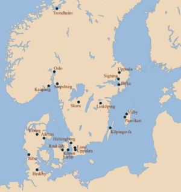
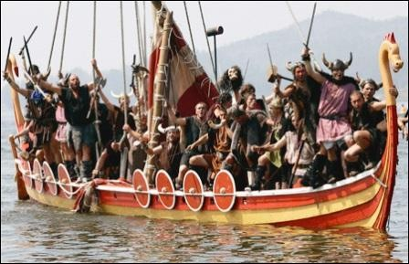
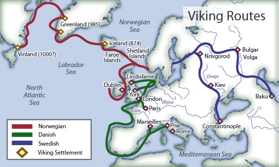
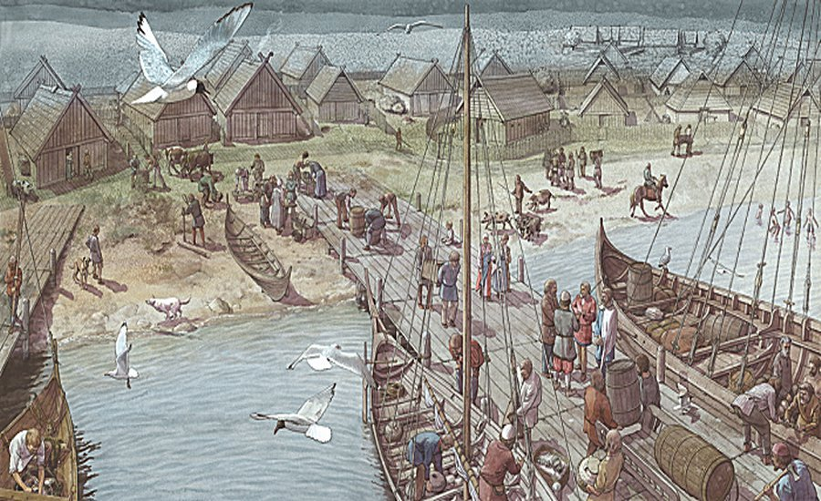
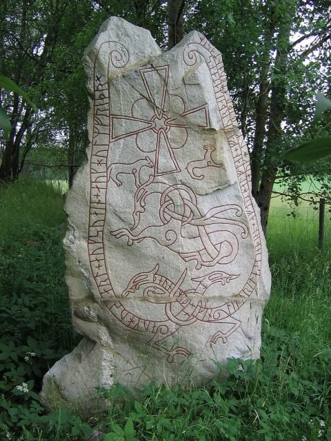

In the time of the Viking Age Sweden was fragmented into many petty kingdoms (also known as earldoms) ruled each by a local chieftain, although, according to semi-legendary history, there might have been renowned monarchs who ruled parts of the realms of what is now Sweden (along with Denmark and Norway) such as Ragnar Lothbrok or Bjorn Ironside (both allegedly belonging to the Royal House of Munso) at certain times. The Swedes, then known as Varangians, or Rus. They are very interesting because out of the three they were the ones who stayed true to their pagan ways for the longest. They were poised to discover and pillage new lands in the east along the Volga and Dnieper rivers. Their expeditions, however, were of a different sort than the Danes and Norwegians in the west. They were excellent explorers and tradesmen, but simply not as violent as the others (in relative terms, of course they terrorized many primitives along the Baltic) The goal of the Rus was primarily to trade (or so we think). They established long trade routes to the middle east and around the Black Sea.
-
In this period Sweeden was parted into several tribes and their districts are still partly indicated by the present divisions of the country.
700 A.C
 -
Swedish Vikings also controlled trade across the Baltic; and it was for this activity that Birka, generally regarded as Sweden’s oldest town, was founded Swedish Vikings took part in raids against western Europe as well.
800 A.C
 -
The goal of the Rus was primarily to trade (or so we think). They established long trade routes to the middle east and around the Black Sea. To this day, why this event occurred is unclear, but most historians believe this was a capitulation by the Slavs to years of raids.
900 A.C
 -
The control of the Russian market began to slip from Swedish hands into those of Frisian, German, and Gotland merchants.
1000 A.C
 -
Sverker, a member of a magnate family from Ostergotland, was acknowledged as king, and this province now became the political centre of Sweden.
1130 A.C

-
Some of runic inscriptions were founded in England belong to the last phase of vikings age. What proves that vikings made raids into England even preferring go to the east.
1150 A.C
